Normally, RailCOMPLETE is launched when AutoCAD is started. The RailCOMPLETE buttons should be visible under the RailCOMPLETE pane.
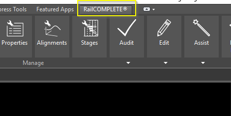
If RailCOMPLETE is not visible inside AutoCAD, the menu can be loaded with the RC-LOADRIBBON command.
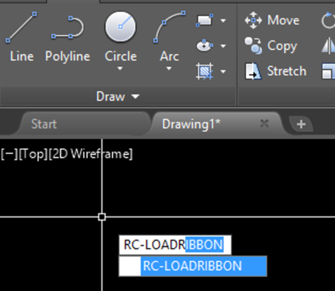
RailCOMPLETE has more than 100 built-in commands. All RailCOMPLETE commands start with a “RC-” prefix. In general, a command name consists of an action and an object. Typical examples are RC-MOVETEXTATTRIBUTES, RC-CREATEAREA and RC-SHOWGEOMETRY. To get a list of all available RailCOMPLETE commands, start the command RC-BROWSECOMMANDS, as shown below.
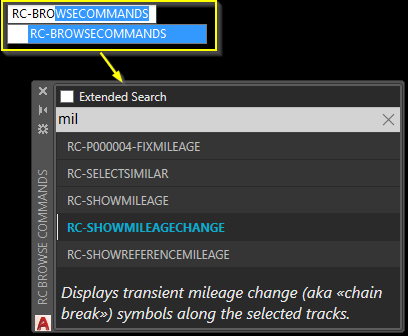
You may at any time bring up the Command Browser by double-clicking on the RailCOMPLETE logo – «the wheel».
Whenever you hover over a button in the ribbon, you may bring up detailed reference manual information with the F1 button.
To start a new RailCOMPLETE document, open an existing or a blank AutoCAD document. In the ribbon, select Start New Document and give the project a name (optional). 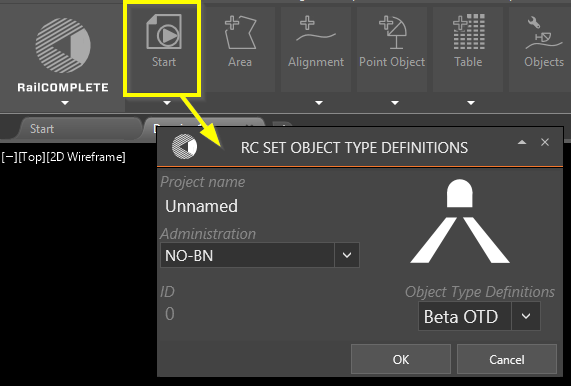
When the AutoCAD document has been converted to a RailCOMPLETE drawing, the rest of the icons in the ribbon is enabled, and the Start New Document button is changed to Document Properties.
Start a new RailCOMPLETE document, as described above, and create an alignment by drawing a polyline from the Create Alignment button.
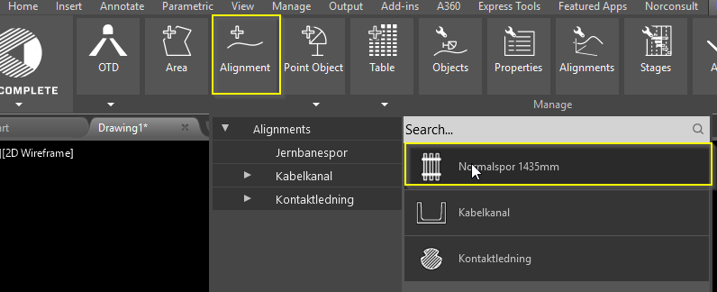
RailCOMPLETE will ask for an alignment name after the alignment has been created. In this case, we will name it "Track Example01"
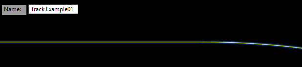
This polyline is now a RailCOMPLETE alignment, and can be manipulated in RC-MANAGEALIGNMENTS.
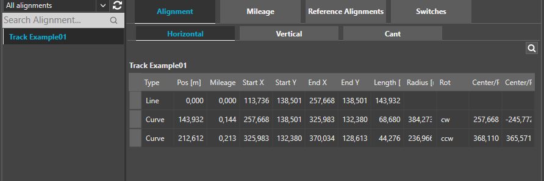
Alignment mileage is shown when the 'RC-SHOWMILEAGE' is active.
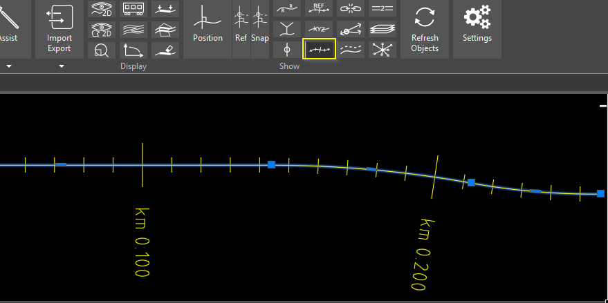
To add objects, click on the Create Point Object button and navigate to an item. It is also possible to search for objects in the search field.
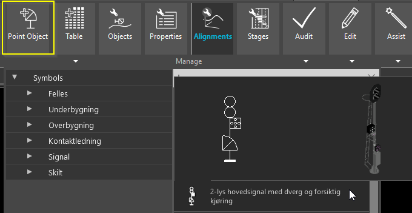
Select the object to be created and snap the item to somewhere on the alignment.
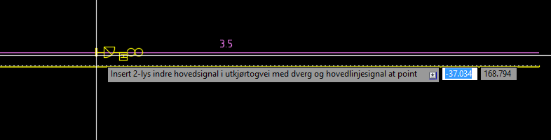
The item has now been created, and it is possible to view and manipulate the object details by opening the Properties window.
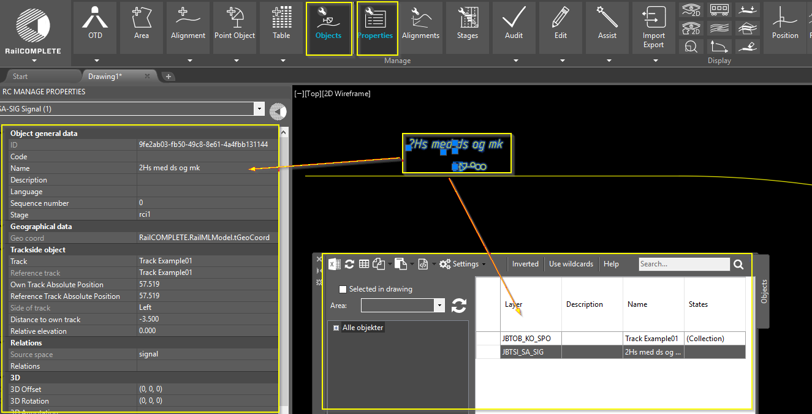